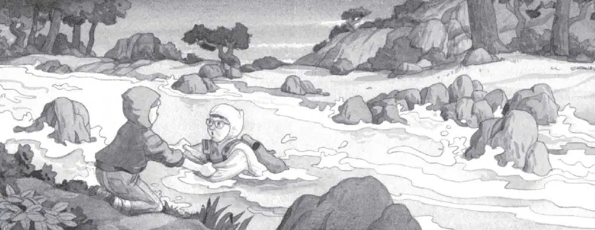

Jack and Annie crouched together. Samurai were on both sides of them now. They were trapped!
Jack pressed against the rock.
The warrior stepped closer and closer. He looked to the right. He looked to the left.
Jack held his breath.
“Be nature,” whispered Annie.
“What?” Jack whispered back.
“Be nature. Be a rock.”
Oh brother, thought Jack. This was nuts. But he squeezed his eyes shut. Then he tried to be part of the rock.
Jack tried to be as still as the rock. As solid as the rock. As quiet as the rock.
Soon he started feeling as strong as the rock. As safe as the rock. He wanted to be the rock forever.
Squeak.
“He’s gone,” said Annie. “They’re all gone.”
Jack opened his eyes. The samurai warrior was gone. Jack stood up and looked over the rock. The torches were gone, too.
“Let’s go,” Annie said.
Jack took a deep breath. He felt great—he was getting more and more like a ninja every minute. Maybe even like a ninja master.
“East!” he said.
And they went east. Down the mountain, between the rocks. Until they came to the wide, icy stream.
The water seemed even wilder than before.
“I don’t see the tree house,” said Annie.
Jack looked across the stream to the dark grove of trees. Moonlight shone on their pale flowers. But where was the tree house?
“I don’t see it either,” said Jack. “We have to cross the water first. Then we’ll try and find it.”
The water was crashing and rushing over the rocks.
Squeak. The mouse peeked out from its pouch.
“Don’t be afraid,” said Annie. She patted the mouse’s little head. “Be like us. Be like a ninja, too.”
“Let’s go,” Jack said.
He took a deep breath and stepped into the stream. The icy water swirled up to his knees. The current knocked him over.
Jack grabbed some weeds. He held on tight as water swirled around him.
He was freezing to death!
“Jack!” Annie grabbed Jack’s arms. She helped him back onto the bank.
“That was close!” said Annie.
Jack wiped his glasses. Luckily, they hadn’t fallen off in the water.
“Are you okay?” said Annie.
“N-not really,” said Jack, his teeth chattering. He was chilled to the bone.
“We’ll never get across,” said Annie. “We’ll drown if we try.”

“Or fr-freeze to death,” said Jack.
He pulled off the hood of his sweatshirt. He didn’t feel much like a ninja anymore.
Annie pulled off her hood, too. She sighed. “What can we do?” she said.
Squeak.
Peanut climbed out of Annie’s sweatshirt pouch and leaped onto the ground.
The mouse scampered away.
“Peanut, come back!” Annie called.
“No,” said Jack. “We have to follow Peanut.”
“Why?” asked Annie.
“We have to do what the master said!” said Jack. “Follow nature!”
“Oh. Right!” said Annie. “Follow Peanut! But where is Peanut?”
In the moonlight Jack saw the little mouse. It was running through the grass along the stream.
“There!” he cried. “Come on!”
Annie hurried after Jack. Jack hurried after Peanut. They ran beside the rushing waters.
A moonlit branch had fallen across a narrow part of the stream. It touched both shores.
The mouse was running over the branch.
“Peanut’s going over a bridge!” said Annie. She started to follow.
“Wait!” cried Jack. “We can’t go on that branch. It’s too small! It’ll break!”